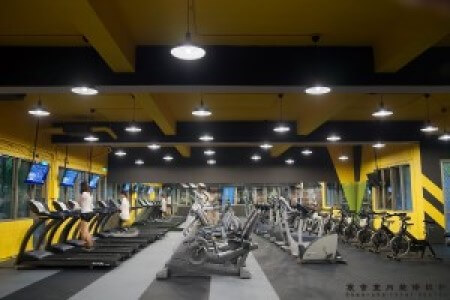
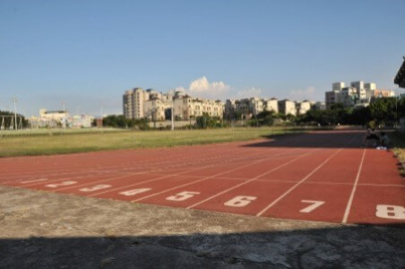
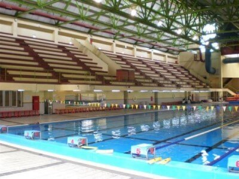
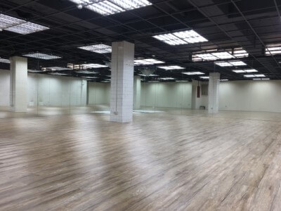

|  | 中原大學的健身房為提供學生最舒適減壓的運動空間，以明亮飽和的黃色及藍色活化場域更帶來朝氣感。器材則沿牆擺設，讓視覺感受不擁擠。地板特別選用深灰、黑色互搭的巧拼式TCP健身房專用地墊，除了可以用色塊劃分不同部位的健身區域，地墊本身還具有耐磨吸音的優點，底層的橡膠特性更能為學生們提供彈性、穩定的支撐功能，在提升運動品質之餘也保護學生運動安全！在進入健身房前學校也設置置物櫃供學生暫時擺放球鞋、運動用品，並於場內外加裝監視器保障學生個人財產，以防物品遭竊，出入場則採用證件辨識系統加強管理，讓學生可以無慮自在地享受運動。 |
|  | 中原大學操場跑道為400M 場地設施：8道400公尺跑道、標槍、鉛球、鐵餅、鏈球投擲場地、跳遠、跳高、撐竿跳場地、3000 障礙水坑。 |
|  | 中原大學興建一奧運標準之室內游泳池，池內有水道8條長50M，提供游泳教學及正式比賽之用。外牆R.C、屋頂鋼構，造型配搭先已建成之體育館。在設計上乾濕動線嚴格劃分，觀眾自門廳直接引導至二層看台，可容納觀眾400～600席，看台架高與體育館二樓以天橋相連，看台下方作為更衣、浴廁、管理及機電之用。由於泳池一面臨校外道路，故僅開高窗，泳池兩端以大玻璃面配合池邊教學活動及休憩空間，並以天窗採光。本工程總樓地板面積3,130平方公尺，總工程造價75,000,000元，於1991年5月竣工。本工程與體育館新建工程共同獲得中華民國建築師雜誌銀牌獎。 |
|  | 有氧舞蹈教室提供了舒適的環境可供中原大學的學生做有氧舞蹈課、體育課、跆拳道社團......等練習。 |